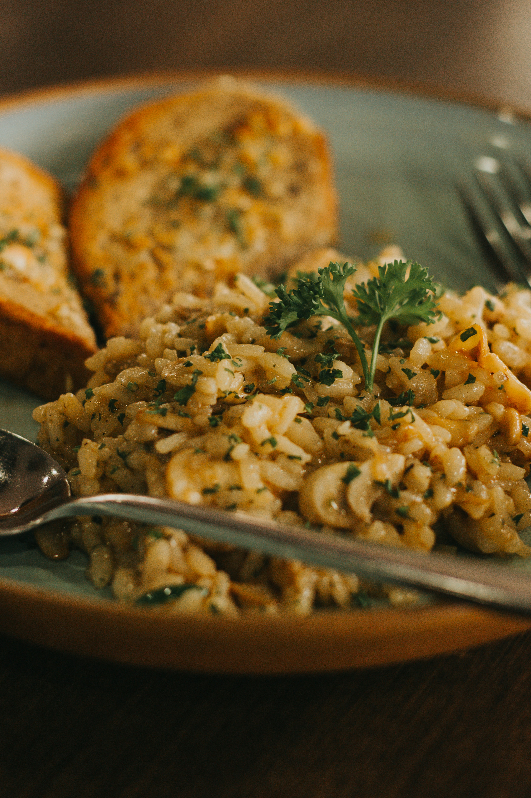

A creamy and flavorful Italian rice dish made by slowly cooking Arborio rice in broth until it reaches a rich, velvety consistency. Finished with Parmesan cheese and seasonings, risotto is a comforting meal that can be enjoyed on its own or served as a side dish.